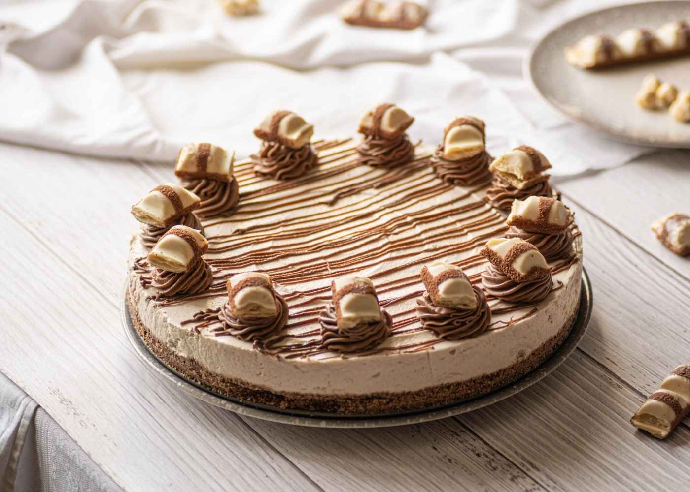

No Bake Kinder Bueno Cheesecake

Description
We've used blitzed Kinder Bueno bars in the biscuit base of this no-bake cheesecake, hidden them throughout the chocolate cream cheese layer AND put some on top too. It's the ultimate easy dessert recipe but is guaranteed to wow everyone!
Ingredients
- 200g digestive biscuits
- 5 x 43g Kinder Bueno Chocolate Bars
- 100g butter, melted
- 60ml (1/4 cup) boiling water
- 2 1/2 tsps gelatine powder
- 180g pkt milk chocolate, chopped
- 500g cream cheese, at room temperature, chopped
- 100g (1/2 cup) caster sugar
- 2 tsps vanilla extract
- 375ml (1 1/2 cups) thickened cream
- Cocoa powder, to dust
- 2 x 43g Kinder Bueno Chocolate Bars, broken into small pieces
Instructions
- Line the base and sides of a 20cm springform pan with baking paper.
- Place the biscuits and 1 Kinder Bueno bar (2 sticks) in a food processor. Process until fine crumbs form. Add the butter and process until combined. Transfer to prepared pan. Use a straight-sided glass to spread and press the biscuit mixture firmly over the base of the pan. Place in the fridge until required.
- Place the boiling water in a small heatproof jug. Sprinkle with the gelatine . Whisk with a fork until dissolved. Set aside to cool slightly.
- Place the milk chocolate in a heatproof bowl set over a saucepan of simmering water (don't let the bowl touch the water). Stir with a metal spoon until smooth. Set aside to cool slightly.
- Place the cream cheese , sugar and vanilla in a food processor. Process until smooth. Add 250ml (1 cup) of the cream and process until combined. Add melted chocolate and process until combined. Add gelatine mixture and process until combined.
- Pour half the cheesecake mixture into the prepared pan. Arrange rows of other 4 Kinder Bueno bars, about 1.5cm apart, trimming to fit, over cheesecake mixture. Top with remaining cheesecake mixture. Smooth top. Place in the fridge for 4 hours or overnight until set.
- Remove cheesecake from the pan and place on a serving plate. Use electric beaters to beat the remaining 125ml (1/2 cup) cream until soft peaks form. Top cheesecake with cream. Dust with cocoa and decorate with remaining Kinder Bueno bars. Serve.